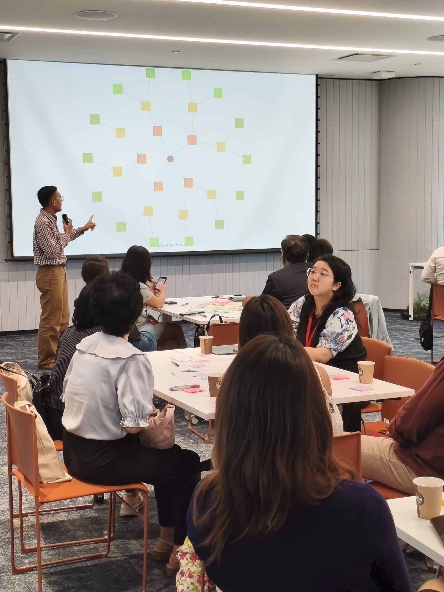

Singapore · facilitation, sensing, capability
We run the session where the real disagreement finally gets said out loud, then we write down what your team decided.

Rooms we have worked in
More than 200 sessions delivered across Singapore and ASEAN.
Temasek·IRAS·NUS·RSIS·SHRI·Mapletree·Murdoch University·Temasek Foundation·NCSS
What we do
We work in boardrooms, polytechnic classrooms and community halls, and the examples we use in the room come from the same places.
Offsites, strategy sessions and the conversations your team keeps postponing. We'll surface the disagreement that consensus buries, without anyone leaving the room bruised.
You get: session design, facilitation, and a written synthesis of what was actually said and decided.
Market sensing, landscape scans, horizon scanning and scenario work. We build the picture from source, check it against live pages, and hand over the method so your team can keep it current.
You get: validated datasets, scan reports and scenario sets your team can defend in front of a board.
We train your facilitators and programme leads to run these methods themselves. Curriculum, materials, and practice runs where they're the ones holding the room.
You get: a curriculum, working materials, and people who have practised, not just attended.
Selected work
Sensing work for a polytechnic, a perception session for senior leaders, facilitation training for community practitioners, and a futures session for HR leads.
Read the case studies →How an engagement runs
25 minutes. Bring the actual question, not the tidy version you'd put on a slide.
Fixed scope, fixed fee, named dates. Built to pass procurement first time.
The people you spoke to are the people in the room. There's nobody junior to hand it down to.
A document your team can circulate and act on, not a deck that dies in a drive.
Small by design. We're three people, on purpose. You get senior practitioners in the room and no pyramid of juniors to pay for. When a job needs more hands we bring in Singapore firms we've worked with, and we'll tell you before you sign, not after.
People
Three practitioners. Ibnur usually takes the first call, Saiful designs the work behind it, Carol leads how people learn inside it.
Usually the first person you will meet. He co-founded the Sustainable Living Lab in 2011, the workshop behind the iBam, a phone speaker cut from bamboo that runs on no electricity, and runs GUILD Asia across the public, private and people sectors. In a session he is the one asking what it would take to build a rough version this month and put it in front of someone.
Two UNESCO Mondialogo Engineering Awards · TEDx speaker · Engineering Science and University Scholars Programme, NUS
Thirteen years as a decorated SCDF paramedic before he ran his first workshop, which is where he learned to hold a room while it is falling apart. Since then, sessions for polytechnics, universities, public agencies and corporate teams across the region. He designs the method behind each engagement and writes the synthesis afterwards, so he is often not the first person you meet, but his hand is on the work throughout.
ACLP-certified adult educator · Postgraduate Certificate in Design Strategy and Innovation, SIT · Causal Layered Analysis, Three Horizons, polarity methods
Designs how people learn in our programmes, from the first exercise in the room to how a team keeps practising after we leave. She founded the Singapore chapter of #play14, where leaders work on real problems through serious play, and has spent twenty years in senior roles across government, higher education and technology. She also runs The Human Futures Practice.
Foresight, systems thinking and game-informed learning design · Works with corporates, tertiary institutions and public agencies
The method
The mark is cut into five pieces, one for each sight: Foresight, Insight, Sight, Hindsight, Oversight. A session takes them in that order, so your team sees one decision from every side before anyone commits. Values are the paper they're cut from.
Start a conversation
Write to us. Two or three sentences, as messy as it actually is. You'll get a reply from one of us, and if it isn't work for us we'll say so and point you to someone better.
hi@fivesights.co